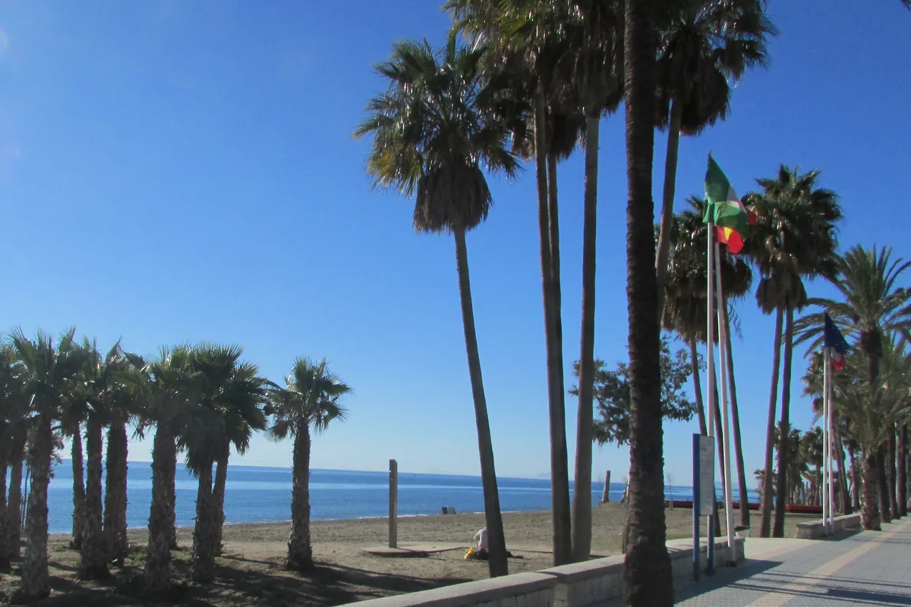
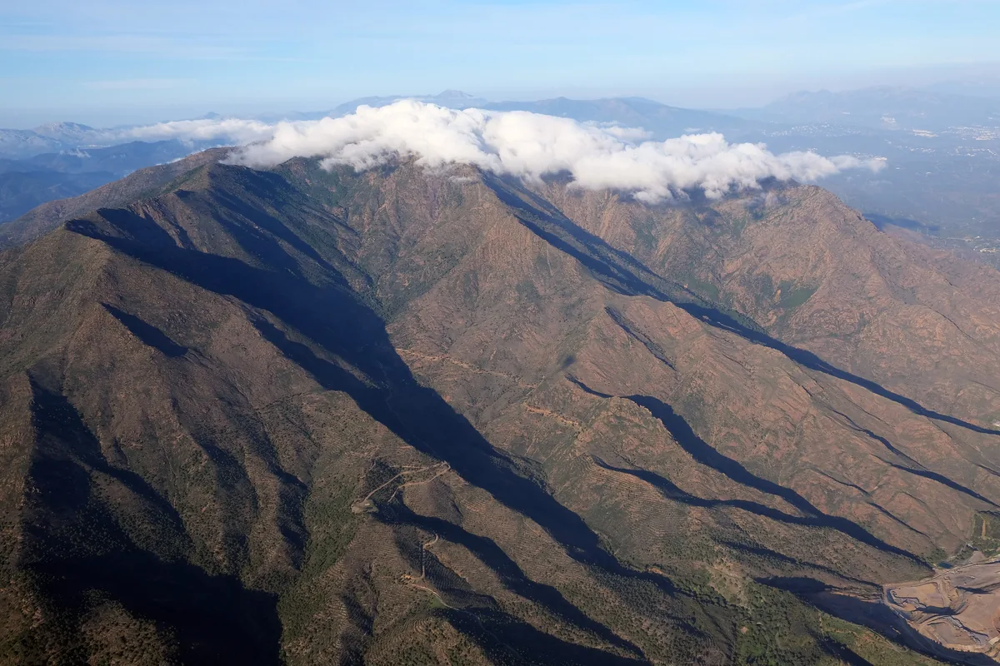

Området
Från promenaden till poloplanerna
De sju orterna, från promenaden till poloplanerna, beskrivs nedan. Var och en har en kort beskrivning och en bild av vad som är till salu nu.
San Pedro de Alcántara · Estepona · Casares · Manilva · Sotogrande
Westersol kopplar ihop köpare med granskade, verkligt skickliga lokala mäklare mellan San Pedro de Alcántara och Sotogrande. Du berättar vad du söker. Vi väljer personligen ut en mäklare vi litar på och presenterar dig, utan kostnad för dig. Mäklaren sköter visningar och samtalet om priset. Köpguiden och ortguiderna hjälper dig att förbereda dig.

Den här kusten är inte en enda marknad. San Pedro känns som ett riktigt samhälle, med en lång strandpromenad. Estepona har en gammal stadskärna och en fungerande hamn. Längre västerut klättrar byarna uppför kullen, med utsikt mot Gibraltar och, en klar dag, Afrika. Varje plats har sitt tempo och sina priser. Det här är början på guiden. Den fullständiga köpguiden och ortguiderna går längre. När du är redo presenterar vi dig för en pålitlig lokal mäklare.
De sju orterna, från promenaden till poloplanerna, beskrivs nedan. Var och en har en kort beskrivning och en bild av vad som är till salu nu.
På en begagnad bostad i Andalusien betalar du 7 procent överlåtelseskatt (ITP). På ett typiskt nybygge är det 10 procent moms plus 1,2 procent stämpelskatt (AJD), tillsammans 11,2 procent. Därutöver tillkommer notarie, fastighetsregister och vanligtvis en advokat — poster utan en fast lagstadgad procentsats. Det ofta nämnda intervallet på ungefär 10 till 13 procent extra är en riktning, inte en offert. Köpguiden redovisar källorna.
Först ett NIE och en advokat som arbetar för dig, inte för säljaren. Sedan en reservation, arras-kontraktet, due diligence och escrituran hos notarien. Ett köp tar ofta flera månader. Därför frågar vi om din tidsplan: inom tolv månader, eller senare.
Läs den fullständiga köpguiden Ortguider


En ögonblicksbild av bostäder till salu i var och en av de sju orterna, hämtad från Idealista den 15 november 2026. Det är inte objekt på den här webbplatsen.

San Pedro de Alcántara har en lång strandpromenad och ett centrum som fortfarande känns lokalt, med Guadalmina intill.
1 079 bostäder till salu (Idealista, 15 november 2026).
Exempelpriser det datumet låg mellan 395 000 euro och 1 395 000 euro.

Estepona är den gamla staden, hamnen och, bakom den, Sierra Bermeja.
5 580 bostäder till salu (Idealista, 15 november 2026).
Exempelpriser det datumet låg mellan 269 000 euro och 1 395 000 euro.

Casares ligger uppe på kullen, en vit by, med golf och havsutsikt vid kusten nedanför.
809 bostäder till salu (Idealista, 15 november 2026).
Exempelpriser det datumet låg mellan 330 000 euro och 775 000 euro.

Manilva är ett vardagssamhälle med en promenad längs havet.
98 bostäder till salu i orten själv, inte i den vidare kommunen (Idealista, 15 november 2026).
Exempelpriser det datumet låg mellan 250 000 euro och 750 000 euro.

Sabinillas är ett vardagssamhälle med en promenad längs havet.
149 bostäder till salu (Idealista, 15 november 2026).
Exempelpriser det datumet låg mellan 220 000 euro och 1 100 000 euro.

La Duquesa kretsar kring sin marina.
235 bostäder till salu i La Duquesa och Puerto de la Duquesa tillsammans (Idealista, 15 november 2026).
Exempelpriser det datumet låg mellan 275 000 euro och 699 000 euro.

Sotogrande är polo, golf, marinor och de slutna områdena, med Alcaidesa intill.
879 bostäder till salu (Idealista, 15 november 2026).
Exempelpriser det datumet låg mellan 279 000 euro och 1 350 000 euro.
Riktvärden, baserade på offentliga annonser den 15 november 2026.
Det här är exempel på den typ av nyproduktion du kan hitta mellan San Pedro de Alcántara och Sotogrande. Det är inte objekt till salu. Westersol har inget samarbete med något projekt, och vi säljer inte själva på ritning.
Nya lägenhetshus en kort promenad från promenaden och sanden, nära centrum.

Lägenhetshus i första och andra linjen längs kusten mellan San Pedro och Estepona.

Radhus och villor ovanför Estepona, många med utsikt över havet och Sierra Bermeja.
Lägenheter runt golfbanorna på Casareskusten, inklusive området kring Finca Cortesin.

Bostäder med utsikt över marinor, och nya lägenheter några minuter från hamnen.

Nya villor och lägenheter i områdena, nära golfen, poloplanerna och marinor.
Efter intaget kan partneragenten visa dig de projekt som faktiskt är till salu just då.

Vår styrka är enkel: vi väljer personligen ut pålitliga, verkligt skickliga lokala mäklare och presenterar dig för en av dem, utan kostnad för dig. Vi är inte en mäklarfirma, och inte en part i förhandlingen.
Budget, tidsram, område, typ av bostad, och om du köper kontant eller med bolån.
Vi går igenom din förfrågan och väljer en lokal mäklare som vi har granskat: någon med verklig kunskap om den här kusten, som arbetar öppet och hjälper köpare på ett bra sätt.
Med ditt samtycke presenterar vi dig skriftligen, innan någon kontakt tas. Du betalar oss ingenting för den presentationen.
Visningar, bud och samtalet om priset ligger hos mäklaren. Vi följer ärendet fram till köpebrevet.
Berättelsen nedan är ett exempel på processen. Den handlar inte om en verklig kund.
Ett par från Stockholm vill ha ett radhus nära Esteponas gamla stad. De fyller i formuläret med budget, tidsram och området de har i åtanke.
Westersol skriver tillbaka, stämmer av de punkterna och frågar om de går med på att presenteras för en pålitlig lokal mäklare som vi själva har valt ut. När de säger ja går presentationen ut skriftligen. Därefter ordnar mäklaren visningarna och sköter förhandlingen.
Det här avsnittet förblir tomt tills en verklig köpare skriftligen godkänner att vi får använda deras ord här.
För köpare från Sverige som söker ett andra hem mellan San Pedro de Alcántara och Sotogrande, med en budget från omkring 300 000 euro och en horisont på tolv månader eller kortare. Om du fortfarande orienterar dig är du välkommen att fylla i formuläret; sådana förfrågningar behandlas som information, inte som en omedelbar presentation.

Ett kort formulär, starten på en presentation för en pålitlig mäklare. Vi svarar på svenska. Vi använder dina uppgifter bara för att hantera din förfrågan och, endast med ditt senare samtycke, lämna dem till den mäklaren.